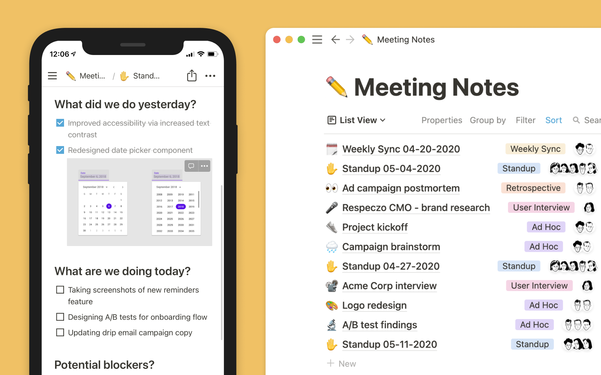

Team up without the chaos Connect your teams, projects, and docs in Notion - so you can bust silos and move as one.
Never ask "What's the context?" again Stale wikis aren't helpful. Neither are floating docs. In Notion, your daily work and knowledge live side by side - so you never lose context. 
Build the workflow you want Customize Notion to make it work the way you want it to. Just drag and drop to craft the dashboard, website, doc, or system you need.